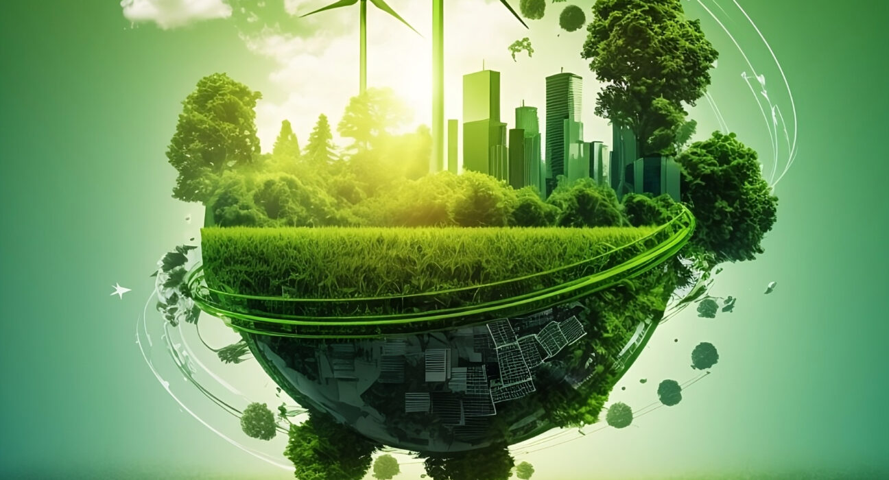

What is sustainable development?
Sustainable development is a concept that refers to meeting the needs of the present without compromising the ability of future generations to meet their own needs. It involves balancing economic, social, and environmental considerations to create a more equitable and resilient society that can thrive over the long-term. Sustainable development aims to promote economic growth and development while minimizing the negative impacts on the environment and society. This means using resources more efficiently, reducing waste and pollution, and protecting natural habitats and biodiversity. It also involves promoting social equity and inclusion, ensuring that all members of society have access to basic necessities such as food, shelter, and healthcare. Sustainable development recognizes that economic, social, and environmental systems are interconnected, and that addressing one aspect of sustainability requires consideration of the others. For example, reducing greenhouse gas emissions to mitigate climate change can also have positive social and economic impacts, such as reducing air pollution and creating new jobs in renewable energy. In order to achieve sustainable development, it is necessary to work collaboratively across sectors and disciplines, and to involve all members of society in the decision-making process. This includes governments, businesses, civil society organizations, and individuals. By working together, it is possible to create a more sustainable and resilient future for all.
Role of Student
Role of students in achieving sustainable development
One of the most important ways that students can contribute to sustainable development is by learning about the issues facing the world today. This means staying informed about environmental and social challenges such as climate change, pollution, poverty, and inequality, and understanding how these issues are interconnected. By developing a broad understanding of these issues, students can begin to see how their own actions and choices can make a difference in creating a more sustainable future.
Another way that students can contribute to sustainable development is by taking action in their own lives. This can involve making small changes to their daily habits, such as using reusable water bottles, reducing waste, and conserving energy. Students can also get involved in larger sustainability initiatives on their campuses and in their communities, such as supporting local farmers, volunteering with environmental organizations, and advocating for policy changes that support sustainability.
Finally, students can contribute to sustainable development by pursuing careers and fields of study that have a positive impact on the environment and society. This might mean studying courses such as environmental science, engineering, or policy, or pursuing careers in renewable energy, sustainable agriculture, or social entrepreneurship. By choosing to work in these fields, students can make a significant impact on the world and help to create a more sustainable future.
Why should sustainable development matter to you as a student? There are many reasons. First, sustainable development is essential for the future of the planet and for future generations. As a student, you have the opportunity to be a part of creating a more sustainable future, and to make a positive impact on the world. Second, sustainable development is also important for your own personal growth and development. By learning about and contributing to sustainable development, you can develop a greater sense of purpose and meaning, and gain valuable skills and experiences that will serve you well throughout your life and career.
Roles of Teacher
Curriculum Integration: Teachers can integrate sustainability themes across various subjects such as science, social studies, geography, and even literature and art. This ensures that students learn about sustainability concepts from multiple perspectives and understand its interdisciplinary nature.
Experiential Learning: Teachers can organize field trips, outdoor activities, and hands-on projects that allow students to directly engage with nature and sustainability issues. Experiencing sustainability in action can have a profound impact on students and foster a deeper understanding of its importance.
Role Modeling: Teachers serve as role models for their students. By practicing sustainable behaviors in their own lives, such as reducing waste, conserving energy, and adopting eco-friendly practices, they can inspire students to follow suit.
Encouraging Critical Thinking: Teachers can encourage students to critically analyze environmental issues, understand their root causes, and explore potential solutions. By fostering critical thinking skills, teachers empower students to become active agents of change in their communities.
Promoting Environmental Literacy: Teachers can help students develop a strong foundation in environmental science and literacy. This includes understanding concepts such as ecosystems, biodiversity, climate change, and resource management, which are essential for making informed decisions about sustainability.
Empowering Student Action: Teachers can facilitate student-led initiatives such as eco-clubs, sustainability projects, and community service activities. By empowering students to take action on sustainability issues, teachers instill a sense of agency and responsibility for the environment.
Facilitating Discussions and Debates: Teachers can create a safe and inclusive classroom environment where students feel comfortable discussing complex sustainability topics, expressing diverse perspectives, and engaging in constructive debates. This cultivates critical thinking skills and promotes empathy and understanding.
Connecting Global Issues to Local Contexts: Teachers can help students understand the interconnectedness of global sustainability challenges and their local implications. By examining how environmental issues affect their own communities, students develop a sense of ownership and responsibility for addressing them.
Utilizing Technology and Media: Teachers can leverage technology and multimedia resources to enhance sustainability education. This includes using educational apps, online simulations, documentaries, and interactive websites to provide engaging and dynamic learning experiences.
Continuous Learning and Professional Development:Teachers should actively seek opportunities for professional development in sustainability education. By staying informed about the latest research, best practices, and teaching methodologies, they can continuously enhance their own knowledge and effectiveness as educators.
Overall, teachers play a pivotal role in fostering sustainability awareness and empowering future generations to create a more sustainable world. Through their dedication, creativity, and passion for teaching, they inspire students to become informed, engaged, and proactive stewards of the environment.
Future of sustainability
Renewable Energy Transition: The transition to renewable energy sources such as solar, wind, and hydro power is expected to accelerate in the coming years. Advancements in renewable energy technologies, coupled with growing concerns about climate change and energy security, will drive this shift away from fossil fuels.
Circular Economy: The concept of a circular economy, where resources are reused, recycled, or repurposed to minimize waste and maximize efficiency, is gaining traction. Businesses, governments, and consumers are increasingly recognizing the economic and environmental benefits of transitioning from a linear "take-make-dispose" model to a circular approach.
Sustainable Urbanization: As urban populations continue to grow, there is a growing emphasis on creating sustainable cities and communities. This includes investments in public transportation, green infrastructure, energy-efficient buildings, and urban planning strategies that prioritize walkability, biodiversity, and resilience to climate change.
Regenerative Agriculture: Agriculture accounts for a significant portion of global greenhouse gas emissions and biodiversity loss. The future of sustainability in agriculture lies in adopting regenerative practices that restore soil health, promote biodiversity, and sequester carbon. This includes techniques such as agroforestry, cover cropping, and holistic grazing management.
Climate Resilience and Adaptation: Despite efforts to mitigate climate change, its impacts are already being felt around the world. The future of sustainability will increasingly focus on building resilience and adapting to a changing climate. This includes investments in infrastructure, disaster preparedness, ecosystem restoration, and community-based adaptation initiatives.
Technological Innovation: Technological innovation will continue to play a crucial role in advancing sustainability across various sectors. This includes breakthroughs in clean energy, sustainable materials, water purification, waste management, and digital technologies that enable more efficient resource utilization and monitoring.
Corporate Sustainability: Businesses are increasingly integrating sustainability into their core operations and decision-making processes. Corporate sustainability initiatives encompass areas such as supply chain management, product design, corporate governance, and stakeholder engagement. As consumer preferences and regulatory pressures evolve, companies that prioritize sustainability are likely to gain a competitive edge.
Global Collaboration and Governance: Addressing complex sustainability challenges requires international cooperation, multilateral agreements, and effective governance mechanisms. The future of sustainability will depend on the ability of governments, businesses, civil society organizations, and other stakeholders to work together towards common goals, such as achieving the Sustainable Development Goals (SDGs) set forth by the United Nations.
Education and Awareness: Education and awareness will continue to be critical drivers of sustainability. Empowering individuals with knowledge, skills, and values that promote sustainable living and decision-making is essential for creating a more sustainable future. This includes formal education in schools and universities, as well as informal learning opportunities through media, public outreach campaigns, and community-based initiatives.
Equity and Social Justice: Achieving sustainability requires addressing underlying issues of inequality, social justice, and environmental justice. The future of sustainability must be inclusive and equitable, ensuring that the benefits of sustainable development are shared by all people, regardless of their socioeconomic status, ethnicity, or geographic location.
Overall, the future of sustainability is characterized by both challenges and opportunities. By embracing innovation, collaboration, and a shared commitment to stewardship of the planet, we can build a more sustainable and resilient future for generations to come.